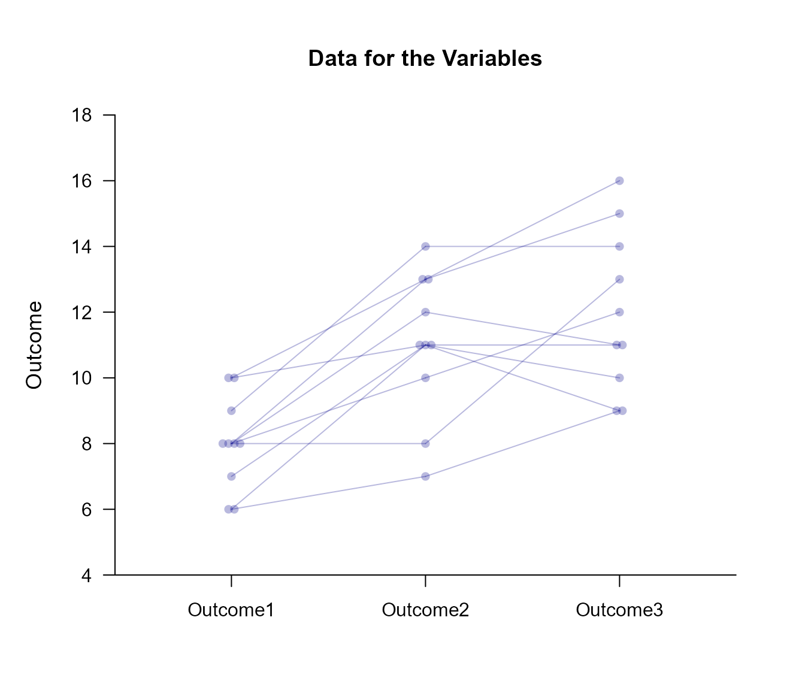

Frequencies Repeated Measures Data Application
Source:vignettes/FrequenciesRepeatedMeasuresDataApplication.Rmd
FrequenciesRepeatedMeasuresDataApplication.RmdThis page provides basic data plots and frequency distributions using repeated-measures (within-subjects) data.
Frequency Distributions
Frequency distributions and data plots are often a first step in analyzing data.
Describe the frequency distributions.
(RepeatedData) |> describeFrequencies()$`Frequency Distribution for the Data: Outcome1`
Freq Perc CumFreq CumPerc
6 2.000 20.000 2.000 20.000
7 1.000 10.000 3.000 30.000
8 4.000 40.000 7.000 70.000
9 1.000 10.000 8.000 80.000
10 2.000 20.000 10.000 100.000
$`Frequency Distribution for the Data: Outcome2`
Freq Perc CumFreq CumPerc
7 1.000 10.000 1.000 10.000
8 1.000 10.000 2.000 20.000
10 1.000 10.000 3.000 30.000
11 3.000 30.000 6.000 60.000
12 1.000 10.000 7.000 70.000
13 2.000 20.000 9.000 90.000
14 1.000 10.000 10.000 100.000
$`Frequency Distribution for the Data: Outcome3`
Freq Perc CumFreq CumPerc
9 2.000 20.000 2.000 20.000
10 1.000 10.000 3.000 30.000
11 2.000 20.000 5.000 50.000
12 1.000 10.000 6.000 60.000
13 1.000 10.000 7.000 70.000
14 1.000 10.000 8.000 80.000
15 1.000 10.000 9.000 90.000
16 1.000 10.000 10.000 100.000Plot the frequencies as data points and enhance with color. Data points obtained from the same individuals are connected.
(RepeatedData) |> plotData(offset = 0, method = "swarm", connect = TRUE, col = "darkblue")
Summary Statistics
It is often helpful to view the summary statistics in conjunction with the frequency distributions.
Describe the summary statistics.
(RepeatedData) |> describeSummary()$`Summary Statistics for the Data`
N M SD Skew Kurt
Outcome1 10.000 8.000 1.414 0.000 -0.738
Outcome2 10.000 11.000 2.211 -0.617 -0.212
Outcome3 10.000 12.000 2.449 0.340 -1.102Plot the frequency distributions as histograms and add the summary statistics. The bars represent standard deviations, with dotted lines as the default but solid lines representing the sides with more skew.
(RepeatedData) |> plotFrequencies(main = "Frequencies and Summary Statistics for the Data", col = "darkblue")
(RepeatedData) |> plotSummary(add = TRUE, col = "darkblue")